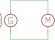

Régime TT
)].svg)
Titre 1
Le courant admissible C'est le courant maximal que le conducteur peut véhiculer en permanence sans préjudice pour sa durée de vie.
le courant d'emploi calculé avec les facteurs de correction permet de respecter les conditions de longévité. Le courant d’emploi IB est le courant qui est réellement transporté en étant inférieur. correspondant à la plus grande puissance transportée par le circuit en service normal. (prend en compte les courants d'appel). le courant d'emploi est calculé à partir du courant absorbé=nominal: In courant assigné (calibre du dispositif de protection). Icw est le courant assigné de courte durée admissible. Ce courant concerne les jeux de barres. Icw doit être >= Icc. Courant de réglage/désigné
En ce qui concerne la température admissible en régime permanent, elle est basée sur l’estimation de la durée de vie des isolations C’est ainsi que la durée de vie des isolants a été estimée à trente années si la température à leur surface n’était pas supérieure à : 60 oC pour le caoutchouc ordinaire ; 70 oC pour le polychlorure de vinyle (PVC) ; 90 oC pour le polyéthylène réticulé (PR) et l’éthylène-propylène (EPR) ; 180 oC pour le caoutchouc de silicone.
Régime IT
)].png)
Titre 1
La convention émetteur-admetteur est une convention utilisée en électricité pour décrire le sens des flux électriques dans un circuit. Selon cette convention, le courant électrique est considéré comme circulant du point de potentiel plus élevé (générateur) vers le point de potentiel plus faible (récepteur).
En fait, un conducteur n’est jamais parcouru en permanence par son courant admissible, sauf cas particuliers. Il peut donc être tenu compte des conditions d’utilisation pour déterminer sa durée de vie.
Le pouvoir de coupure d’un disjoncteur (noté Pdc) correspond à l’intensité maximale à laquelle il va assurer sa fonction de coupure du courant en cas de court-circuit.(sinon il colle->DDR, sinon il crée un arc->fusible). C’est donc en mesurant cette intensité de court-circuit (notée Icc) que l’on peut en déterminer le pouvoir de coupure nécessaire au disjoncteur. En effet, "Pdc" doit être plus grand que "Icc" pour garantir la sécurité de l’installation.
B pour installation domestique gG anciennement GI : emploi général industriel aM accompagnement moteur, emploi industrie AD accompagnement disjoncteur (d’abonné par exemple)
La puissance fluctuante est une puissance sinusoïdale de fréquence double de celle du courant et de la tension. Elle est une grandeur sinusoïdale de valeur moyenne nulle. La moyenne de cette puissance est la puissance active, consommée par le circuit à quoi s'ajoute une puissance fluctuante lorsque le circuit contient une partie inductive ou capacitive4. Pour des convertisseurs électrothermiques, cette
Régime TN-c
)].svg)
Titre 1
La convention émetteur-admetteur est une convention utilisée en électricité pour décrire le sens des flux électriques dans un circuit. Selon cette convention, le courant électrique est considéré comme circulant du point de potentiel plus élevé (générateur) vers le point de potentiel plus faible (récepteur).
)].png)